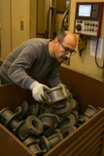
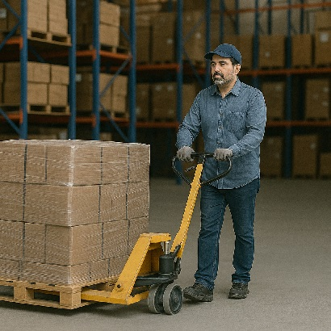
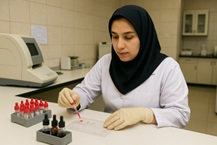
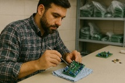
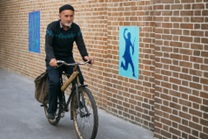
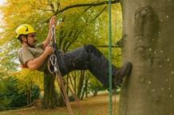
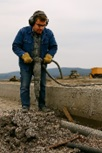
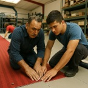

بلند کردن، نگه داشتن و حمل بار
KIM-LHC

هل دادن و کشیدن دستی بار
KIM-PP

فعالیتهای دستی
KIM-MHO


جابجایی بدنی
KIM-BM


اعمال نیرو با تمام بدن
KIM-BF



پوسچرهای بدنی نامناسب
KIM-ABP

کاربرد این روش
برای ارزیابی وظایف بلند کردن، نگه داشتن و حمل دستی بارهایی بیش از ۳ کیلوگرم بهکار میرود. این بارها میتوانند اجسام، افراد یا حتی حیوانات باشند و شامل پایین آوردن یا جابهجایی افقی بار هم میشود.
شروع ارزیابی
مشاهده راهنمای کامل (PDF)